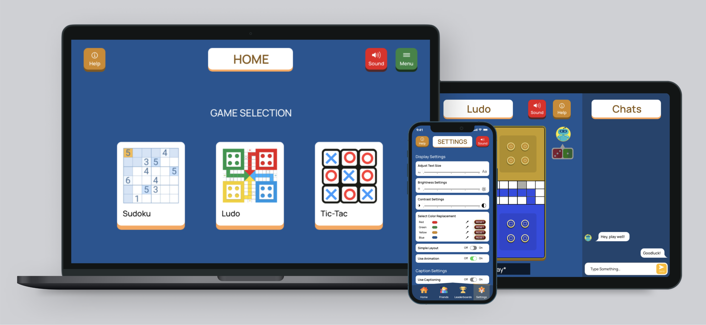
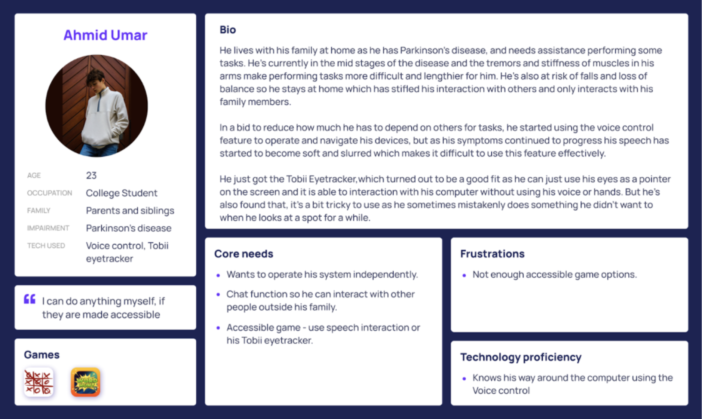
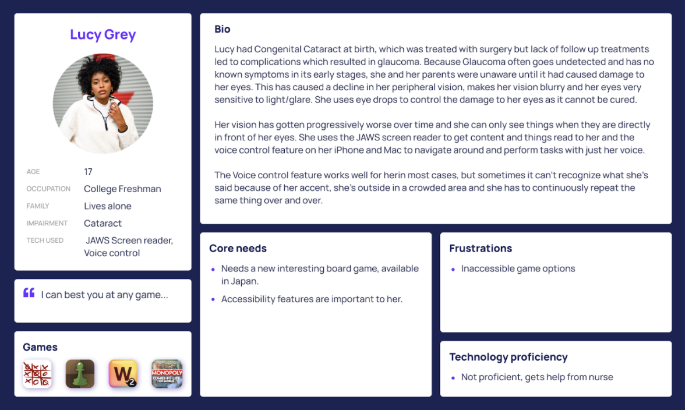
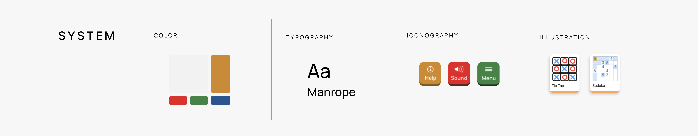
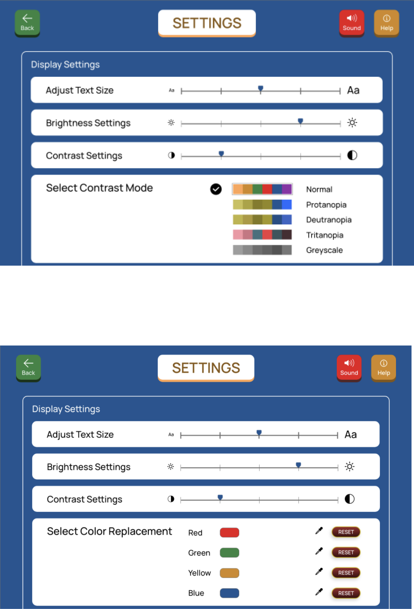
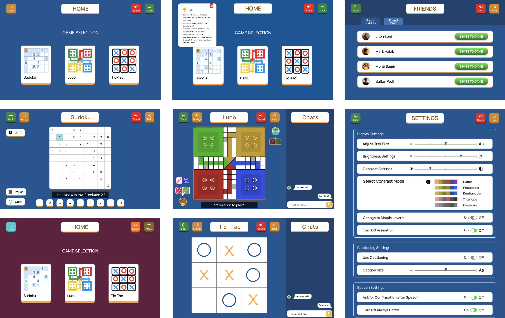

GAME BOARD
Investigating accessibility challenges in games

TIMELINE
6 weeks
TOOLS
Pen and Paper, Adobe XD
MY ROLE
User research, Visual Design, Interaction Design, Accessibility, Prototyping, Testing
PROBLEM
People with disabilities are not fully considered when designing games.
As the adoption of games increases today it is clear that it is not made for just a fixed category of people and should be made with considerations for everyone. However, it is clear that people with disabilities are not fully considered when designing them and in more recent times, they are considered as an afterthought. Millions of people live with conditions that can affect their cognitive, visual, motor, or auditory functions but this shouldn’t limit them from getting access to or playing games. Making certain “small” accessibility choices available suddenly opens these games up to an even larger audience and more inclusive to disabled users.
PERSONAS
Based on the insights and observations from the research, I created 4 personas that captured the users, their core needs, frustrations and technology proficieny.

DESIGN
I did some initial sketches to do some quick investigations and get feedback early on
Using the research findings, I explored 2 design ideas to find the best approach to the solution. I started with some initial sketches to do some quick investigation of what would work.

GUIDELINES
Following WCAG Guidelines
AHMED - PARKINSON’S DISEASE
- All elements on screen i.e buttons, texts e.t.c have a minimum target size of 44 by 44 px (WCAG, 2.5.5) which makes sure every element can be clicked easily.
LUCY - BLURRY VISION
- It was important to add text alternatives for all images on the screen so it’s readable (WCAG, 1.1).
- Users can increase texts on screen up to 200% without losing content or functionality allowing them to find an appropriate size that works perfectly for them (WCAG, 1.4.4).
- Also, poor contrast between elements on screen makes it difficult for content to be seen or understood and it was ensured that texts and interactive elements have a color contrast ratio of at least 4.5:1.
- Throughout the application, instructions for performing actions such as buttons or links were designed so they didn't have to rely solely on sensory characteristics such as shape or color, also every button had an icon as well as a label to describe its function (WCAG, 1.3.3).
- In games, colors are used very often as “bad” or “good” indicators and to represent different players or tokens. This can be a challenge for color-blind users who can’t see specific colors(Red, Green, and Blue), an option was added to the settings menu to allow users to select a different color mode based on the type of colorblindness they had, allowing the application to change the colors into a more suitable color for people with that type of colorblindness.
TED - SENSORIAL HEARING
- A lot of captions in games are not very accessible and little work has been done in this area and there are no specific guidelines to follow.
- However, captions and subtitles are similar and are generally represented in the same way. Bodies like the BBC and Netflix have studied and provided recommendations for optimal subtitles to ensure they are accessible to all users, and they can be transferred to this context for captioning.
- The (BBC subtitle guideline, 3.1) has recommended that each line of a subtitle has 37 - 42 characters and only two lines are shown on the screen at any particular time (BBC subtitle guideline, 3.3).
- It is also recommended to aim to leave a subtitle on screen for a minimum period of around 0.3 seconds per word (BBC subtitle guideline, 4.1).
CAROL - ALZHEIMERS
- The (WCAG, 1.3) recommends designing content that can be presented in different ways without losing information or structure. Here, a simple layout that can be turned on in the settings, that allows users to use the application without animations and less information on the screen was designed.
- Following (WCAG, 2.4.2), each page has a title that describes what it is for so users are aware of where they currently are.
- The layout and navigation of the application are kept consistent through all pages in the same relative order (WCAG, 3.2.3). This helps users become comfortable so they can predict where to find things on each page.
VISUAL DESIGN

The design style was focused onbeing accessible, in line with this a non-decorative and simple font “Manrope” was used which is legible but still fun enough to fit into the game aesthetic. o ensure all the colors are distinguishable, a Palette with colors that are unambiguous both to colorblind and non-colorblind users (Okabe, 2008) was explored. Furthermore, a color blindness simulator application Sim Daltonism (Sim Daltonism, 2020) was used to look at the design from the perspective of a colorblind person.
TESTING + ITERATIONS
“... changing the color mode based on color blindness type is a nice add on, but it really just feels like changing the theme of the app.
Using a combination of the Think-aloud protocol and the Remote usability testing methods, I conducted user tests with 6 participants, 2 participants had experience with using the Voice Control feature, 3 participants had used closed captioning while watching videos at some point, 1 participant had visual impairment myopia and wears glasses.The key things to be evaluated were the Usability, Findability, Accessibility of the application.

Redoing the Color adjustment
- I explored some other ideas of how to better implement the color settings.
- I updated the design to allow users select and replace the Red, Green, Yellow, and Blue with colors of their choice that fit their preference and is unambiguous.
- This ensured that each user had a color palette that worked well with their particular color deficiencies and didn’t just look like a filter had been put over the application.
FINAL SCREENS
The solution

MULTI-PLATFORM ACCESSIBILITY
Mobile
Tablet
CONCLUSION + REFLECTIONS
What I’ve learnt on this project
After the evaluation, it was observed that users found the app easy to use and they were able to achieve their goals after a short period of using it. If there was more time available, the next step would be to test with more users and gather more feedback based on actual use in day to day environments, and re-iterate the product to suit the needs of the users. A constant re-iteration process and and development would be implemented.
By creating sketches, wireframes, and paper prototype, helped to properly visualize as well as get feedback early on; this helped me save a lot of time and resources in the long run. Also, working with and following established guidelines like WCAG and BBC from the start of the project, helped in finding optimal techniques to achieve the main aim, making the application accessible.
Collaborating with a developer would help to better understand the possibilities of the product, and validate feasibility.
Next